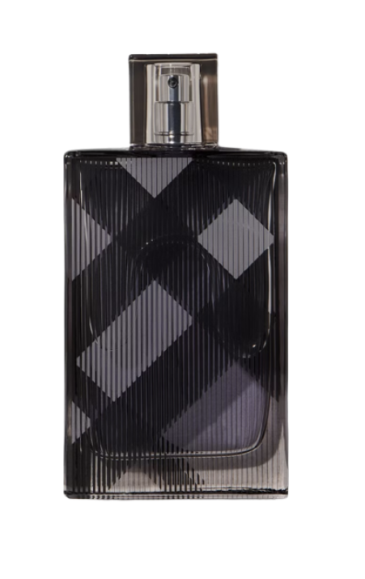
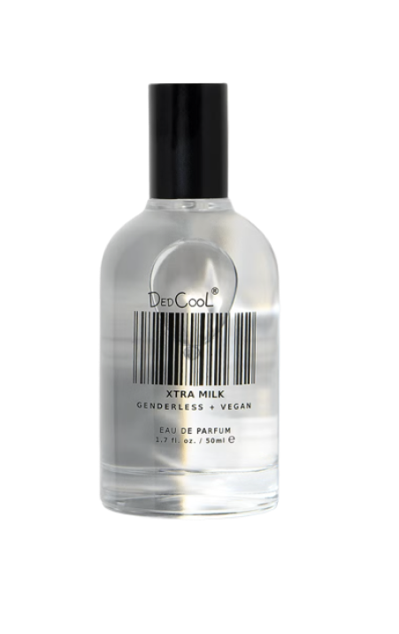
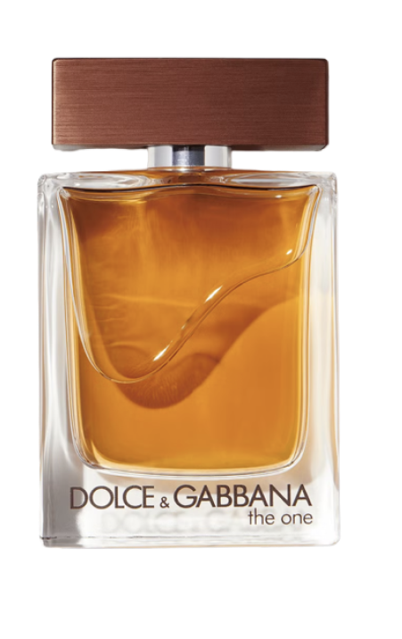
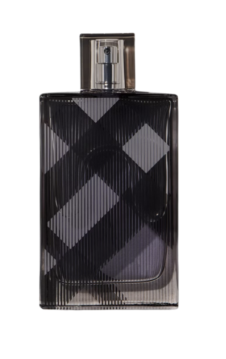
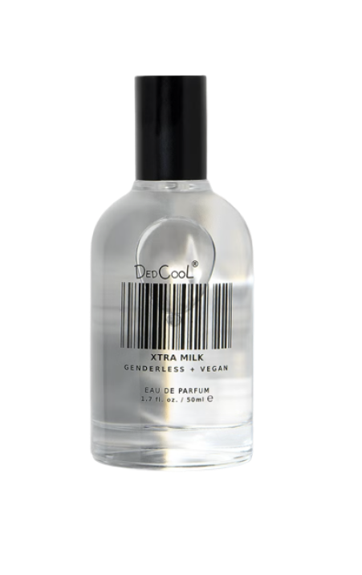
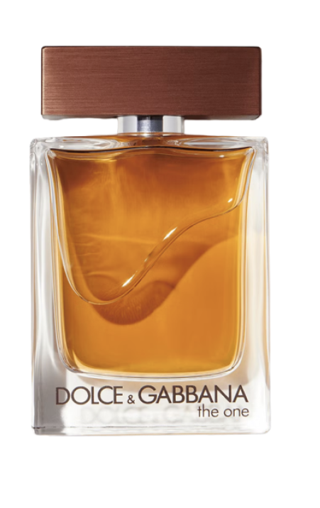

BVLGARI
Man Wood Neroli
Bvlgari
Man Wood Neroli
Bvlgari
With Bvlgari Man Wood Neroli, Bvlgari continues its tribute to nature and its elements, creating a new link between urban energy and regenerative nature. Inspired by the power of the Mediterranean sun, the fragrance celebrates the power of light with notes of neroli, bergamot, orange blossom, cedarwood and musks.
Wearing Bvlgari Man Wood Neroli was a refreshing experience. The bright citrus burst of neroli, bergamot, and orange blossom felt fresh and natural, with a subtle warmth from the cedarwood and musks. I really enjoyed its light, airy feel, which captures that Mediterranean inspiration well.
However, while it’s pleasant, it didn’t strike me as particularly unique. The citrus notes faded quicker than I’d hoped, leaving a musky, woody base that felt a bit flat over time. It’s a safe, versatile choice for everyday wear, but it doesn’t quite deliver the dynamic energy I expected.

 




